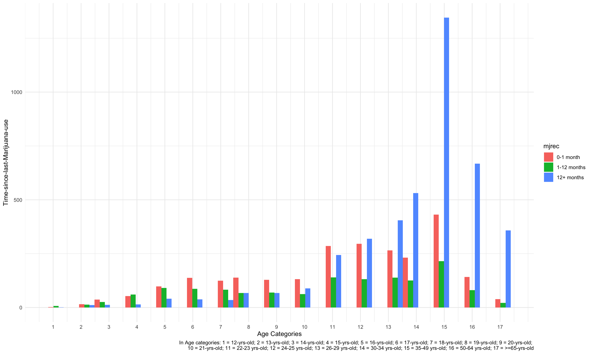

First, let’s explore the marijuana use pattern in the past 30 days of the survey in different age groups.
graph_fendi %>%
group_by(age_cat) %>%
summarise(days = sum(days30)) %>%
knitr::kable(digits = 3)| age_cat | days |
|---|---|
| 12 - 15 | 75.984 |
| 16 - 19 | 435.233 |
| 20 - 25 | 259.535 |
| 26 - 29 | 40.043 |
| 30 - 34 | 30.000 |
| 35 - 49 | 60.102 |
| 50 - 64 | 26.530 |
| older_than_65 | 0.000 |
This table shows the cumulative numbers of days used marijuana in past 30 days in each age range. There were 56136 individuals participating the 2019 NSDUH survey. We can see that people who aged between 16 and 19 years accumulated the most number of days of marijuana using in the past 30 days of the survey, followed by those who aged between 20 and 25 years.
graph_fendi %>%
filter(days30 != 0) %>%
ggplot(aes(x = age_cat, y = days30)) +
geom_boxplot(aes(fill = age_cat), alpha = .5) +
labs(title = "Number of Days Used Marijuana in Past 30 Days",
x = "Age(years)", y = "Number of Days") +
theme(plot.title = element_text(hjust = 0.5)) +
theme_minimal()
This graph shows the distribution of the numbers of days used marijuana in past 30 days of each individual. Those aged between 16 and 25 years had the widest range, while people who aged between 26 and 29 years had the highest mean for number of days used marijuana in past 30 days.
Now, let’s take a look at the marijuana use pattern in the past 30 days of the survey in different types of metro areas.
graph_fendi %>%
mutate(coutyp4 = as.character(coutyp4),
coutyp4 = recode(coutyp4,
"1" = "Large Metro", "2" = "Small Metro", "3" = "Nonmetro"),
coutyp4 = fct_relevel(coutyp4, "Large Metro", "Small Metro", "Nonmetro")) %>%
group_by(coutyp4) %>%
summarise( used30_percent = round(sum(use30)/n()*100, 2)) %>%
ggplot(aes(x = coutyp4, y = used30_percent)) +
geom_bar(stat = "identity", width = 0.5, fill = "steelblue") +
geom_text(aes(label = used30_percent), vjust = 1.6, color = "white", size = 3.5) +
labs(title = "Percentage of Individuals Used Marijuana in Past 30 Days By Metro Area",
x = "Metro Area", y = "Percentage(%)") +
theme(plot.title = element_text(hjust = 0.5)) +
theme_minimal()We can see that the marijuana use patterns in the past 30 days did not vary much across different metro areas. Slightly more individuals from the “large Metro” area (0.17%) used marijuana in the past 30 days of the survey than the other two types of metro areas.
info_scatterplot = info_scatter %>%
filter(irmjage != 991) %>%
group_by(irmjage) %>%
summarise(number_people = n()) %>%
ggplot(aes(x = irmjage, y = number_people)) +
geom_point() +
geom_smooth() +
labs(x = "Age of first used marijuana", y = "Frequency(number of people)",
title = "Age When First Used among people who used MARIJUANA/HASHISH") +
theme_minimal()
info_scatterplot In this part, we created a scatter plot to show the age when first used MARIJUANA/HASHISH and frequency of people in each year. We excluded people who never use MARIJUANA/HASHISH in this plot. Because, without doubts, most people never use MARIJUANA/HASHISH. In our dataset, there are 31340 people who never use MARIJUANA/HASHISH. Therefore, after excluding people who never use MARIJUANA/HASHISH, it is more clear to see the distribution of Age when First Used among people who used MARIJUANA/HASHISH.
From this plot, we could conclude that most people who used Marijuana started between 10 and 30 years old when first used marijuana. So, it is necessary to focus on youth population during our further steps.